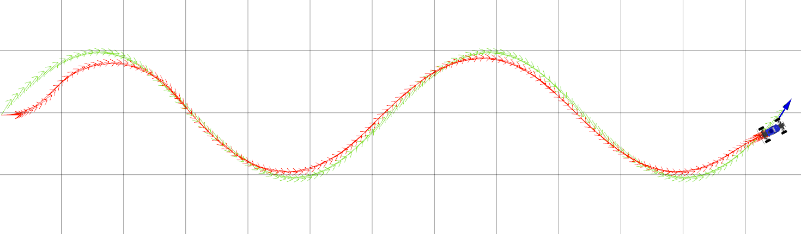
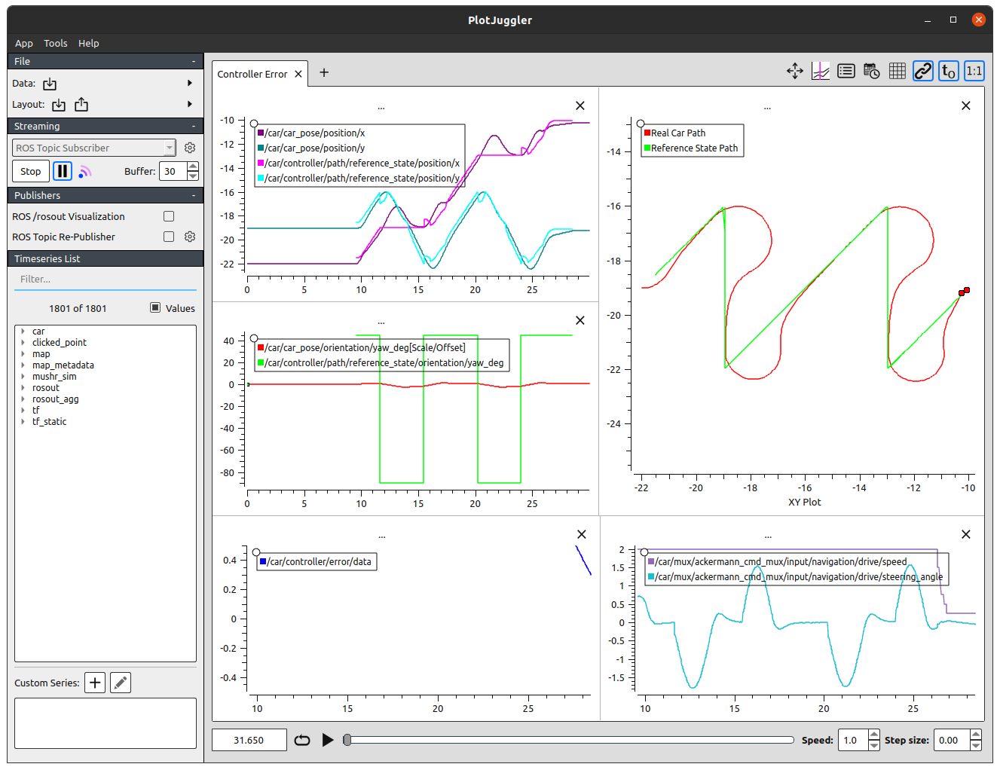
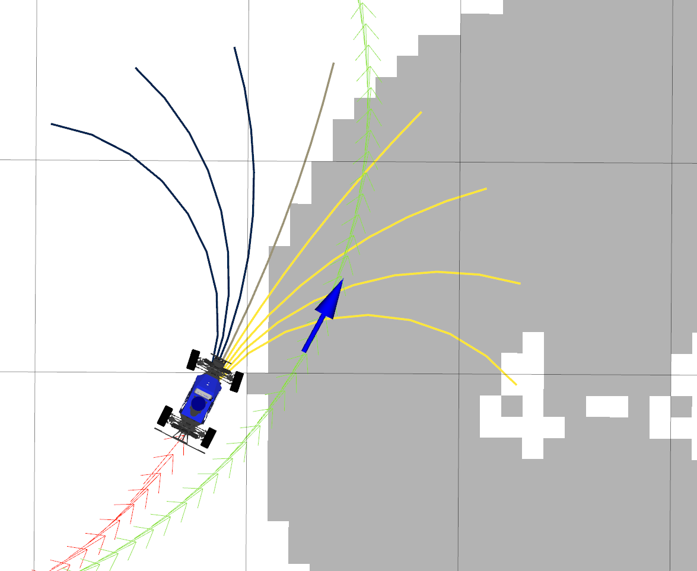
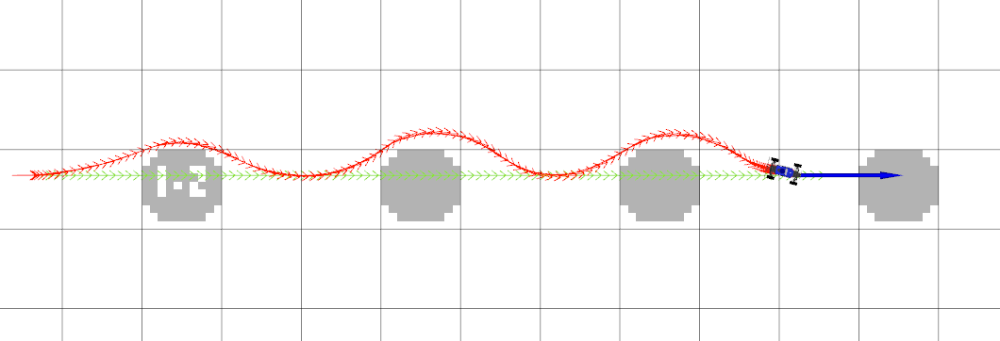
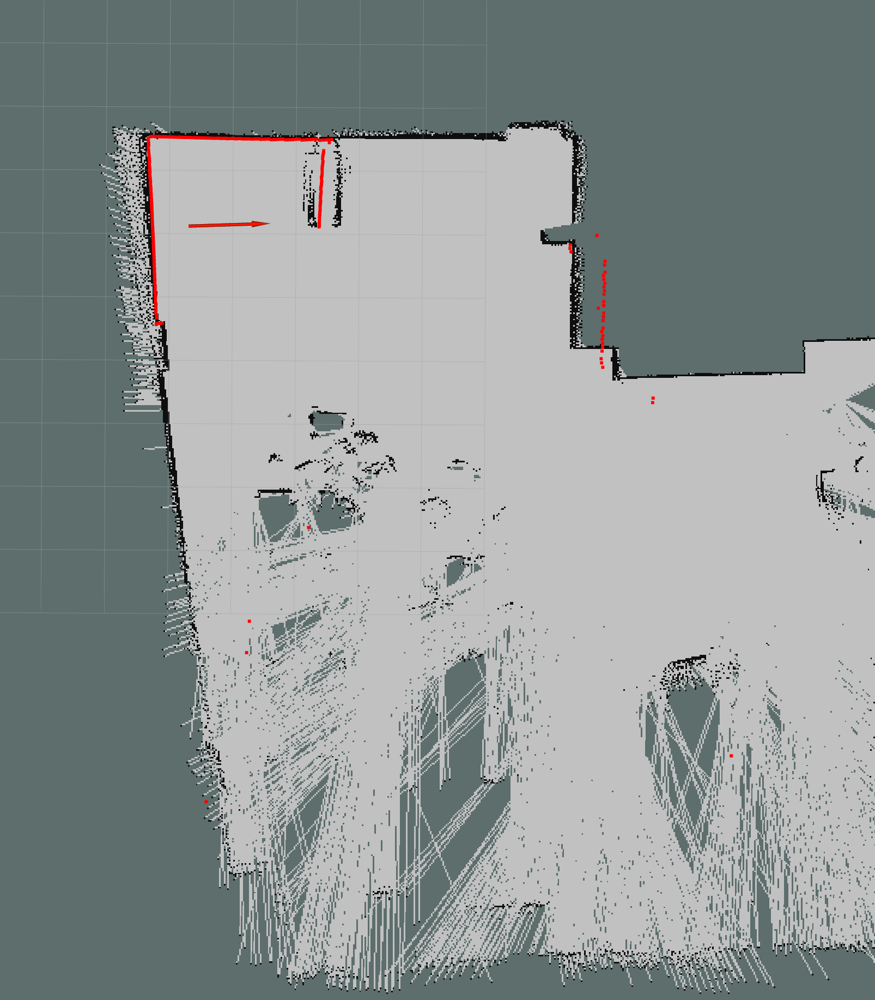

Project 3: Control

Overview
In this project, you will implement several fundamental path tracking control algorithms: PID, Pure Pursuit, and MPC.1 To accurately track the desired paths, you will tune the parameters that govern their behavior. As a result, you will also become familiar with the strengths and weaknesses of the various feedback control strategies discussed in this course.
Please complete this assignment with your group from the previous assignment.
The relevant lectures are:
- Feedback Control
- PID Control, Pure Pursuit Control
- Model-Predictive Control and LQR
Getting Started
You’ll need to pull down the latest version of the starter repository to get the Project 3 starter code.
If you haven’t already, add our starter repository as a new remote repository, named upstream. Then, you’ll pull the files from this upstream remote repository into your local repository.
$ cd ~/mushr_ws/src/mushr478
$ git remote add upstream https://gitlab.cs.washington.edu/cse478/25wi/mushr478.git
$ git remote -v # You should see a line starting with "upstream"
$ git pull upstream main
$ cd ..
$ catkin build
$ source ~/mushr_ws/devel/setup.bashIf the builds succeed and you can run roscd control, you’re ready to start! Please post on Ed if you have issues at this point.
Code Overview
We decompose the problem of computing the robot’s actions into two components: motion planning and control. A motion planning algorithm generates an ideal reference path, while a feedback controller uses the robot’s current state (e.g. from the localization package) to follow this reference path. In this project, we will use a series of pre-programmed paths; you will implement motion planning algorithms in the next project.
We’ve provided a BaseController class in src/control/controller.py. The controllers you will implement (PIDController, PurePursuitController, ModelPredictiveController) extend this base class.
The ControlROS class in src/control/control_ros.py provides a ROS interface to the controller classes. ControlROS provides a ROS service defined by FollowPath.srv. This service accepts a request (consisting of a nav_msgs/Path and desired speed) and asks the controller to track the geometric path at that speed. While the controller is tracking the path, ControlROS also publishes to several visualization topics.
The control loop is implemented in BaseController. BaseController.get_reference_index selects a reference state from the path. Each subclass implements controller-specific logic in the get_error and get_control methods. In order to operate at the desired control rate2, your implementations of all three methods must be efficient. Try to vectorize where you can!
The reference paths being tracked by your controllers have reference velocities, and are represented as NumPy arrays of shape (L, 4). Paths with velocity information are named path_xytv, while paths without velocity information are named path_xyt.3 Similarly, a reference state with velocity information is named reference_xytv.
The control vectors returned by get_control contain both velocity and steering angle. In this project, the velocity should be copied directly from the reference velocity. The commanded steering angle will come from your PID/Pure Pursuit/MPC logic.
Implementing MPC will require more time than the other two controllers. Please plan accordingly.
Q1. Reference State Selection and Error Computation
Q1.1 Implement the BaseController.get_reference_index method to select a reference state from the path that is about distance_lookahead from the current robot state (src/control/controller.py). This will be used as the target state for your controllers. To avoid selecting a reference state that would take the robot backwards, you should first compute the closest waypoint on the path and only consider states on the path that come after this closest waypoint.
To compute a reference state that is some lookahead distance away, we recommend first finding the state on the path that is closest to the current vehicle state. Then, step along the path’s waypoints and select the index of the first state that is greater than the lookahead distance from the current state. (You can also look back one index to see which state is closer to the desired lookahead distance.) If no such state exists, you can simply return the final state.
You can verify your implementation on the provided test suite by running python3 test/controller.py. Your code should pass all test cases starting with test_get_reference_index.
Q1.2: Implement the compute_position_in_frame function in src/control/controller.py. You may find the lecture slides or the following derivation useful. This function will be used by your PID and Pure Pursuit controllers: the PID error is the current robot position \((x, y)\) expressed in the coordinate frame defined by \((x_\text{ref}, y_\text{ref}, \theta_\text{ref})\), while the Pure Pursuit error is the position \((x_\text{ref}, y_\text{ref})\) expressed in the coordinate frame defined by \((x, y, \theta)\).
Computing Position in a New Coordinate Frame
Let \(\mathbf{p} = (x, y)\) be the position that we want to be expressed in a new coordinate frame \(F\) defined by the state \((x_F, y_F, \theta_F)\). Then, \(\mathbf{p}\) expressed in frame \(F\) is \({^F}\mathbf{p}\).
\[ \begin{align} {^F}\mathbf{p} = R(-\theta_F) \left( \begin{bmatrix} x \\ y \end{bmatrix} - \begin{bmatrix} x_F \\ y_F \end{bmatrix} \right) = \begin{bmatrix} \cos \theta_F & \sin \theta_F \\ -\sin \theta_F & \cos \theta_F \end{bmatrix} \left( \begin{bmatrix} x \\ y \end{bmatrix} - \begin{bmatrix} x_F \\ y_F \end{bmatrix} \right) \end{align} \]
After completing Q1.1 and Q1.2, expect your code to pass all the test cases in test/controller.py.
Q2. PID Controller
The proportional-integral-derivative (PID) controller is a feedback control mechanism that is simple to implement and widely used. It is often defined as \[ u(t) = -\left( K_p e(t) + K_i \int_0^t e(t') dt' + K_d \frac{d e(t)}{dt} \right) \] where \(K_p\), \(K_i\), and \(K_d\), are all non-negative coefficients for the proportional, integral, and derivative terms of the error \(e(t)\) at time \(t\). In this project, we will actually implement a PD controller, which drops the integral term.
Q2.1: Implement the PD control law in PID.get_control for \(e(t) = e_\text{ct}\). Note that the error argument is the result of get_error, a two-element NumPy array \([e_\text{at}, e_\text{ct}]\). The returned control should be a two-element NumPy array \([v, \delta]\) where \(v\) is copied from the reference velocity and \(\delta\) is the result of the PD control law. Hint: recall from lecture that the derivative of the cross-track error can written analytically as \(\frac{d e_\text{ct}}{dt} = v \sin (\theta - \theta_\text{ref})\).
You can verify your implementation on the provided test suite by running python3 test/pid.py.
Exploring PID Parameters
The PID controller is controlled by the gains \(K_p, K_i, K_d\). We’ve provided some initial values in config/parameters.yaml; note that \(K_i = 0\) since our implementation is a PD controller. As with the previous project, it’ll be up to you to tune the gains \(K_p, K_d\) to achieve good path tracking performance. This Wikipedia article describes a principled approach to finding robust PID gains.4 You may also find this blog post useful; the notation is somewhat different, but it describes a number of tracking controllers and you can use the sliders to build your intuition for how each gain affects the controller.
Tune your gains \(K_p, K_d\) to achieve good tracking performance. In your writeup, briefly explain your tuning process, justify your final gains, and include the plots generated by PlotJuggler for three reference paths:
circle,left-turn, andwave. Suggested names for these plots:pid_circle.png,pid_left.png,pid_wave.png. (Instructions for sending reference paths are in the next section.)
After tuning your gains, evaluate your implementation on the different paths with the following test. Your implementation is expected to track each path within a specified error threshold.
$ rostest control controller_performance.test type:=pidController Visualization Tools
To evaluate your controller with reference paths, we’ll launch our environment across a few terminals.
Open one terminal and run:
$ roslaunch cse478 teleop.launch teleop:=falseIn another, launch a controller (with your choice of pid, pp, or mpc):
$ roslaunch control controller.launch type:=pidNow, to see the controller node’s visualization data:
$ rosrun rviz rviz -d $(rospack find control)/config/control.rvizFinally, send a reference path to the controller. The available path names are: line, circle, left-turn, right-turn, wave, and saw. (saw is a challenging path, so don’t worry if your controllers can’t track it very well.)
$ rosrun control path_sender lineIn the RViz window, you should see a visualization of the reference path you’ve selected, as well as how the MuSHR car moves according to the PD controller. Here is a snapshot of the staff solution PD controller tracking the default wave path. To test the robustness of your controller, you can also vary the parameters of the paths and the initial state of the car. Learn more about the path parameterizations by running path_sender with the -h flag.

Figure 1: The MuSHR car tracking the default wave path with the staff PD controller.
While you’re implementing your controller, it can be helpful to see a plot of its output over time. We have including a configuration for PlotJuggler, a time series visualization tool, that lets you see the error and controls calculated by the controller in real time. Run the following command to start.
$ roslaunch control plotjuggler.launchWhen PlotJuggler starts up, you’ll have to answer two questions fairly quickly so that it starts while the path is still being tracked. Click yes when it asks “Start the previously used streaming plugin? ROS Topic Subscriber” and select all the ROS topics that it asks about (Ctrl-A). If you see a warning about “Can’t find one or more curves.”, just close PlotJuggler and start again. Once PlotJuggler has been completely initialized, you can issue more paths and see the plots in real-time! When a path is complete, press the pause button on the left. You might see something similar to this. (To see the full path, you might want to increase the default value of “Buffer” to 30 in PlotJuggler.)

Figure 3: The MuSHR car tracking the default saw path, as seen through PlotJuggler.
If PlotJuggler isn’t already installed on your virtual machine, you can also run this command.
$ sudo apt install ros-noetic-plotjuggler-rosQ3. Pure Pursuit Controller
Pure Pursuit is a classic feedback control mechanism for autonomous vehicles that calculates the circular arc between the robot’s current state and the reference state. In general, the lookahead distance used to select the reference state may change as the robot drives to reflect the curvature of the path, although your implementation will assume a fixed lookahead distance.
Q3.1: Implement the Pure Pursuit control law in PurePursuit.get_control. As before, the error argument is the result of get_error.
You can verify your implementation on the provided test suite by running python3 test/purepursuit.py.
Exploring the Pure Pursuit Lookahead
The Pure Pursuit controller only has one parameter to tune: the distance_lookahead to select the reference state. As before, we’ve provided an initial value in config/parameters.yaml that needs to be tuned to achieve good path tracking performance.
To visualize the controller, follow the same steps from above but with the Pure Pursuit controller instead. As before, you are encouraged to vary the parameters of the paths and initial state of the car to test the robustness of your controller.
$ roslaunch control controller.launch type:=ppFollow the same steps from above to evaluate the tracking performance of your tuned Pure Pursuit controller.
$ rostest control controller_performance.test type:=ppTune the lookahead distance to achieve good tracking performance with Pure Pursuit. In your writeup, justify your final lookahead distance by including the controller plots for the
wavereference path (pp_wave.png). Additionally, include plots for thewavepath where the lookahead distance is too small/large and explain the resulting Pure Pursuit behavior (pp_small.png,pp_large.png).
Evaluate the tracking performance on the
circlepath with radius parameters 5 and 0.5:rosrun control path_sender circle --radius <R>. How does varying the radius affect the robustness of your controller? Why?
To learn more about Pure Pursuit, you may also find the following supplementary readings interesting. (Coulter, 1992) is the original Pure Pursuit paper, which describes the algorithm and its history. (Paden et al., 2016) is a recent survey paper that describes a number of popular control techniques for vehicles, including Pure Pursuit.
Q4. Model-Predictive Controller (MPC)
Although the PID and Pure Pursuit controllers you’ve implemented can be adequate in some driving conditions, additional factors may affect path tracking in practice. For example, nearby obstacles may require segments of the path to be tracked more closely, but are not incorporated into these simple controllers. More generally, these controllers are myopic: they reason solely about the current action and do not predict how that might impact future actions.
MPC proceeds in two phases. First, it uses a model to solve an \(T\)-horizon optimization problem. This problem is defined by a cost function \(J\) that penalizes states and actions (e.g., states that are in collision); the solution is a sequence of \(T\) actions that minimizes cost. Next, the system will execute the first action and update the current estimated state. The process repeats from this new estimated state.
In your implementation, we will separate the optimization into four steps.
- Sample \(K\) sequences of \(T\) controls (
sample_controls). - Use the kinematic car model from Project 2 to rollout the resulting \((T+1)\)-length sequence of states, including the current estimated state (
get_rollout). - Compute the cost of each rollout from the \(T+1\) resulting states (
compute_rollout_cost). - Of the \(K\) rollouts, select the rollout with the lowest cost and return the first action from this sequence (
get_control).
Q4.1: Implement MPC.sample_controls. This function should return a three-dimensional NumPy array with shape (K, T, 2), representing \(K\) sequences of \(T\) controls (velocity and steering angle). In your implementation, each of the sequences corresponds to a particular steering angle, applied \(T\) times. The steering angles in the \(K\) sequences should evenly span the range of the steering angle, defined by self.min_delta and self.max_delta. (Note that the velocity returned by this method is a placeholder, which will be replaced by the reference velocity in the next question. This is computed once per path tracking request for efficiency.)
After completing Q4.1, expect your code to pass the test_sample_controls test case in test/mpc.py.
Q4.2: Implement MPC.get_rollout. This function should return a three-dimensional NumPy array with shape (K, T+1, 3), representing \(K\) sequences of \(T+1\) resulting states \((x, y, \theta)\). The first pose of each rollout should always be the current pose. To compute the change in state for each step of the rollout, call self.motion_model.compute_changes (which you implemented in Project 2). Remember to vectorize your implementation as much as you can!
After completing Q4.2, expect your code to pass the test_get_rollout test case in test/mpc.py.
Q4.3: We’ve implemented MPC.compute_rollout_cost to call two components of the cost function: MPC.compute_distance_cost and MPC.compute_collision_cost. This cost function penalizes the rollout based on the distance between the final state and the reference state, as well as how many of the states in the rollout would result in collisions. The distance should be weighted by self.error_w and the collision cost should be weighted by self.collision_w. Implement both of these methods. (You should not change compute_rollout_cost.)
After completing Q4.3, expect your code to pass the cost-related test cases in test/mpc.py.
Tuning the parameters of a cost function requires principled design, iteration, and testing. We’ve asked you to implement a specific cost function with two terms and pre-specified weights, but these are all parameters that would be tuned in practice.

Figure 4: MPC rollouts, colored by cost. Yellow rollouts have high cost due to collisions and blue have low cost.
Q4.4: Implement MPC.get_control to solve the \(T\)-horizon optimization problem. We’ve provided the logic for setting self.sampled_controls to match the reference velocity, so it’s ready for computing the rollout. Call the methods you’ve already implemented to fill in values for rollouts and costs, select the rollout with the lowest cost, and return the first action from this sequence.
Exploring MPC Parameters
MPC is controlled by the parameters K and T in config/parameters.yaml, which you should tune to achieve good path tracking performance. In particular, MPC should now allow you to track paths around obstacles that aren’t accounted for by the planner (Figure 5). (The reference paths from path_sender don’t consider obstacles at all.)
We’ve also provided a fun new map under cse478/maps for you to play around in: slalom_world. MPC should be able to navigate around these obstacles! Start the simulator with this new map.
$ roslaunch cse478 teleop.launch teleop:=false map:='$(find cse478)/maps/slalom_world.yaml'You can set different initial positions with the “Publish Point” RViz tool to try navigating around different slaloms. Then, launch MPC and issue a reference path. As before, you may want to evaluate your controller with different path parameters.

Figure 5: MPC avoiding obstacles in the slalom_world map while tracking the line path.
Follow the same steps from above to evaluate the tracking performance of your tuned MPC implementation.
$ rostest control controller_performance.test type:=mpcTune the MPC parameters \(K\) and \(T\) to achieve good tracking performance. In your writeup, briefly explain your tuning process and justify your final parameters. Include the controller plots for the
circle,wave, andsawreference paths in the defaultsandboxmap (mpc_circle.png,mpc_wave.png,mpc_saw.png). What makes thesawpath so difficult to track?
Include the controller plots for two reference paths and slaloms of your choice in the
slalom_worldmap.
Extra Credit : Model Predictive Path Integral (MPPI)
MPPI is a variant of MPC with more flexibility which can optimize for general cost criteria, such as non-convex functions. It extends its applicability to a broader class of stochastic systems and representations by employing an information theoretic framework.
Compared to MPC, there are two changes in MPPI. First, \(K\) sequences of delta controls are sampled from a gaussian distribution. After that, MPPI will calculate the action weights using rollout returns. The actual action commands are obtained by adding the weighted sum of delta controls to the initial controls. Next, the system will execute the first action and update the current estimated state. The process repeats from this new estimated state.
In your implementation, we will separate the optimization into four steps.
- Sample \(K\) sequences of \(T\) controls (
sample_controls). - Use the kinematic car model from Project 2 to rollout the resulting \((T+1)\)-length sequence of states, including the current estimated state (
get_rollout). - Compute the cost of each rollout from the \(T+1\) resulting states (
compute_rollout_cost). - Of the \(K\) rollouts, calculate the actions based on rollout returns and return the first action from this sequence (
get_control).
Step 1: Implement MPPI.sample_controls. This function should return a three-dimensional NumPy array with shape (K, T, 2), representing \(K\) sequences of \(T\) controls (velocity and steering angle). In your implementation, each of the sequences corresponds to a particular steering angle, applied \(T\) times. Unlike in MPC where the steering angles evenly span the range from between the min and the max steering angle, the steering angles for MPPI in the \(K\) sequences should be sampled from a gaussian distribution, with mean delta_mu and variance delta_sigma. (Note that the velocity returned by this method is a placeholder, which will be replaced by the reference velocity in the next question. This is computed once per path tracking request for efficiency.)
After completing step 1, expect your code to pass the test_sample_controls test case in test/mppi.py.
Step 2 and Step 3: you can reuse your MPC implementations.
Step 4: Implement MPPI.get_control to solve the \(T\)-horizon optimization problem. We’ve provided the logic for setting self.sampled_controls to match the reference velocity and how to get the true action commands, so it’s ready for computing the rollout. Call the get_rollout() and compute_rollout_cost() methods that you have implemented to fill in the values for rollouts and costs. After that, you need to find the control sequence with the min cost given the costs of all the rollouts. After finding the minimum cost \(\beta\), use the following formula to get \(\eta\): \[
\eta = \sum_{k=0}^{K-1} \exp\left(-\frac{1}{\lambda} (cost(k) - \beta)\right)
\] which will be used to calculate the weights: \[
W(k) = \frac{1}{\eta} \exp\left(-\frac{1}{\lambda} (cost(k) - \beta)\right)
\]
Then, you can update the steering angle of init_controls by adding the product of the weights with sampled_controls to it. (Please follow algorithm 2 here)
Tuning the parameters of temperature requires principled design, iteration, and testing. We’ve pre-specified weights, but these are all parameters that would be tuned in practice. You can play around with it to check the performance difference.
Remember to vectorize your implementation as much as you can!
Exploring MPPI Parameters
MPPI is controlled by the parameters K and T in config/parameters.yaml. For this problem, we provide reference parameters K and T that enable MPPI to track trajectories. In particular, MPPI should now allow you to track paths like line, circle, turn, wave and saw by using those parameters. You can set different initial positions with the “Publish Point” RViz tool to try navigating around different slaloms. Then, launch MPPI and issue a reference path. As before, you may want to evaluate your controller with different path parameters.
Follow the same steps from above to evaluate the tracking performance of your tuned MPC implementation.
$ rostest control controller_performance.test type:=mppiReport the tracking performance in your writeup with the provided parameters. Include the controller plots for the
circle,wave, andsawreference paths in the defaultsandboxmap (mppi_circle.png,mppi_wave.png,mppi_saw.png)
Running on the Car
First, pull the repo to make sure your repo is up-to-date.
In the MuSHR Lab, place your MuSHR car in the open space. Start teleop, then in another terminal run the following command to specify the map.
$ rosrun map_server map_server $(rospack find cse478)/maps/cse022.yamlIn yet another terminal, start the particle filter with the following command.
$ roslaunch localization particle_filter_sim.launch use_namespace:=true publish_tf:=true tf_prefix:="car/"NOTE: the above command has an additional tf_prefix:="car/" argument which is necessary when you run the particle filter on the real car.
Path following with PID and PP controllers
First, localize the car by setting its initial pose via Rviz.
Run the PID controller:
$ roslaunch control controller.launch type:=pid tf_prefix:="car/"NOTE: the above command has an additional tf_prefix:="car/" argument which is necessary when you run the controller on the real car.
On your workstation, start Rviz and visualize:
- The
/mapMap topic - The
/pf/inferred_posePose topic - The
/scanLaserScan topic - The
/pf/particlesPoseArray topic - The
/car/controller/path/posesPoseArray topic. Set the color to blue. - The
/car/controller/real_path/posesPoseArray topic. Set the color to green.
Send a circular path to the controller:
$ rosrun control path_sender circle --tf_prefix "car/" --speed 0.5 --radius 1NOTE: the above command has an additional --tf_prefix "car/" argument which is necessary when you run the controller on the real car.
Press and hold the R1 bumper of the controller to put the car in autonomous mode. You should see the car runs in a circle.
Record a rosbag of the run including all the visualized topics, and a screenshot of rviz.
Repeat the above with the pp controller.
Obstacle avoidance with the MPC controller
First, localize the car by setting its initial pose via Rviz.
Run the MPC controller:
$ roslaunch control controller.launch type:=mpc tf_prefix:="car/"On your workstation, start Rviz and visualize:
- The
/mapMap topic - The
/pf/inferred_posePose topic - The
/scanLaserScan topic - The
/pf/particlesPoseArray topic - The
/car/controller/path/posesPoseArray topic. Set the color to blue. - The
/car/controller/real_path/posesPoseArray topic. Set the color to green. - The
/car/controller/rolloutsMarkerArray topic.
Place your car in a location like this, where there is an obstacle in front of the car:  An example location to test obstacle avoidance with the MPC controller.
Send the following line path to the controller:
$ rosrun control path_sender line --tf_prefix "car/" --speed 0.5 --length 5 --waypoint-sep 1Press and hold the R1 bumper of the controller to put the car in autonomous mode. You should see the car moving forward and avoiding the obstacle. Tune your controller if necessary (e.g., the planning horizon \(T\)) so that the car can successfully avoid the obstacle. You may also tune --speed and --waypoint-sep parameters to get the best possible result.
Record a rosbag of the run including all the visualized topics, and a screenshot of rviz.
Deliverables
Answer the following writeup questions in control/writeup/README.md. All figures should be saved in the control/writeup directory.
For the controller plots, you may submit either an image of PlotJuggler or a screenshot of RViz after the path has completed.
What tradeoffs did varying the \(K_p\) gain have on your PD controller’s performance?
Describe the tuning process for your PD controller. Justify your final gains \(K_p, K_d\) and include the controller plots for three reference paths on the default
sandboxmap (pid_circle.png,pid_left.png,pid_wave.png).Describe the lookahead distance tuning process for your Pure Pursuit controller. Justify your final lookahead distance by including the controller plot for the
wavereference path on the defaultsandboxmap (pp_wave.png).Include controller plots on the
wavepath for cases where the lookahead distance is too small/large (pp_small.png,pp_large.png). Explain the resulting Pure Pursuit behavior.How does varying the radius of the
circlepath affect the robustness of the Pure Pursuit controller?Describe the tuning process for the MPC optimization parameters. Justify your final parameters \(K, T\) by including the controller plots for the
circle,wave, andsawreference paths on the defaultsandboxmap. What makes thesawpath so difficult to track?Include controller plots for two reference paths and slaloms of your choice in the
slalom_worldmap.In this project, we asked you to implement a very specific MPC cost function that only includes distance and collision terms (and specific weights for the two terms). What other terms might you include, if you were to customize your cost function? (You don’t have to implement this, just describe some ideas.)
Of your three tuned controllers, in which settings is each controller most robust? Which controller worked best in high-speed regimes? You can set the desired speed by adding the
--speed <SPEED>flag topath_sender.Include a bag file and a screenshot of rviz for each controller (
pid,ppandmpc) running on the real car. See above for the detailed instructions.Include plots and required descriptions for MPPI if you finished extra credit part.
Submission
As with the previous projects, you will use Git to submit your project (code, writeup and plots).
From your mushr478 directory, add all of the writeup files and changed code files. Commit those changes, then create a Git tag called submit-proj3. Pushing the tag is how we’ll know when your project is ready for grading.
$ cd ~/mushr_ws/src/mushr478/
$ git diff # See all your changes
$ git add . # Add all the changed files
$ git commit -m 'Finished Project 3!' # Or write a more descriptive commit message
$ git push # Push changes to your GitLab repository
$ git tag submit-proj3 # Create a tag named submit-proj3
$ git push --tags # Push the submit-proj3 tag to GitLabThe controllers you will implement have been used in the DARPA Grand Challenge and DARPA Urban Challenge among many other scenarios.↩︎
Our PID and Pure Pursuit implementations operate at ~50 Hz. Our tuned MPC operates at ~25 Hz, trading off a higher control frequency for a longer search horizon.↩︎
A
path_xytis a convertednav_msgs/Pathmessage, represented as a NumPy array of shape (L, 3).ControlROSadds velocity information to createpath_xytvbefore sending that to your controllers.↩︎Note that this approach is designed to tune \(K_i\) as well, so it may not perform quite as well when only given \(K_p\) and \(K_d\) to tune.↩︎